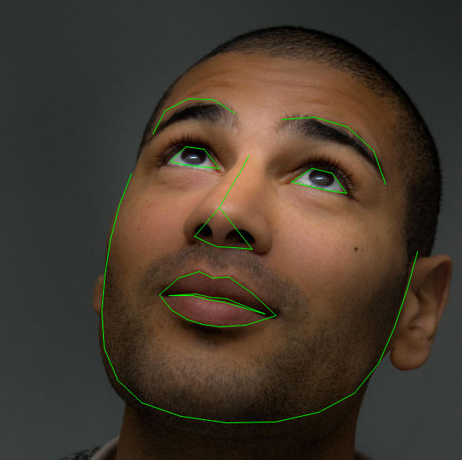
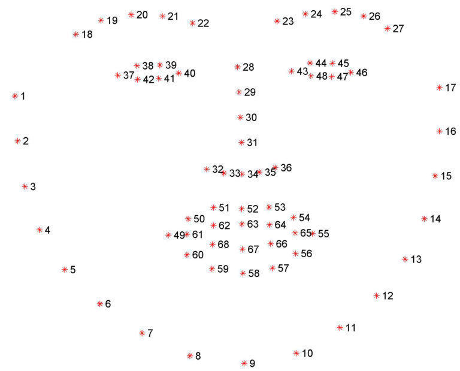
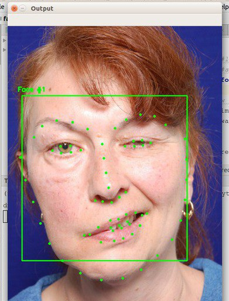

Facial Landmarks'ın amacı önemli yüz yapılarını belirlemektir.
Yüz isaretleri, yüzün en belirgin bölgelerini yerellestirmek ve temsil etmek için kullanilir.
Örneğin;
Gözler
Kaşlar
Burun
Ağız
Çene
Bugünün blog yayınında , aşağıdakiler dahil olmak üzere yüz işaretlerinin temellerine odaklanacağız :
1)Yüz işaretleri nedir? Nasıl Çalışır?
2)Dlib, OpenCV ve Python kullanarak bir görüntüdeki yüz işaretlerini nasıl algılanıp çıkarılır?
1)Yüz işaretleri nedir? Nasıl Çalışır?
Yüz işaretlerini tespit etmek(detection facial landmarks), şekil tahmin(shape prediction) probleminin bir alt kümesidir . Bir giriş görüntüsü ele alınır ve şekil belirleyici şekil boyunca ilgilenilen kilit noktalarını belirlemeye çalışır.
Şekil 1: Yüz işaretleri, görüntüdeki ( kaynak ) anahtar yüz niteliklerini etiketlemek ve tanımlamak için kullanılır .
Yüz işaretlerini tespit etmek bu nedenle iki aşamalı bir işlemdir:
1.Adım:
Görüntüdeki yüzün sınırlarını belirlemek2.Adım:
ROI ile yüzdeki anahtar yüz yapılarını tespit etmek2)Dlib, OpenCV ve Python kullanarak bir görüntüdeki yüz işaretlerini nasıl algılanıp çıkarılır?
Yüz Tanıma
OpenCV'nin Haar Cascade metodunu kullanabiliriz.
Özellikle yüz tanıma görevi için önceden eğitilmiş bir HOG + Linear SVM nesne dedektörü uygulayabiliriz veya yüz yerelleştirme için derin öğrenme temelli algoritmalar bile kullanabiliriz.
Dlib kütüphanesinde yer alan Facial Landmarks Detection, Kazemi ve Sullivan (2014) tarafından Regresyon Ağaçları Topluluğu ile Bir Milisaniye Yüz Hizalaması uygulamasıdır.
Bu yöntemin çalışma mantığı;
Yüz işaretlerinin görüntülerinden oluşan bir eğitim seti kullanılır.Bu görüntüler, her yüz yapısını çevreleyen bölgelerin belirli (x, y) koordinatlarını belirterek yeni görüntüye eklenir.
Sonuç olarak Facial Landmarks, yüksek kaliteli tahminlerle gerçek zamanlı olarak yüz işaretlerini tespit etmek için kullanılabilecek bir yüz işareti dedektörüdür.
Şekil 2:68 yüz ölçüm koordinatını iBUG 300-W veri setinden görselleştirme
Şekil 3: Yüz Felci geçirmiş bir hastada test edilmiş Facial Landmarks algoritması başarılı bir şekilde yüz imgelerini tanımıştır.
Kitapları ile bize ilham olan Adrian Rosebrock'a Teşşekür ediyorum.